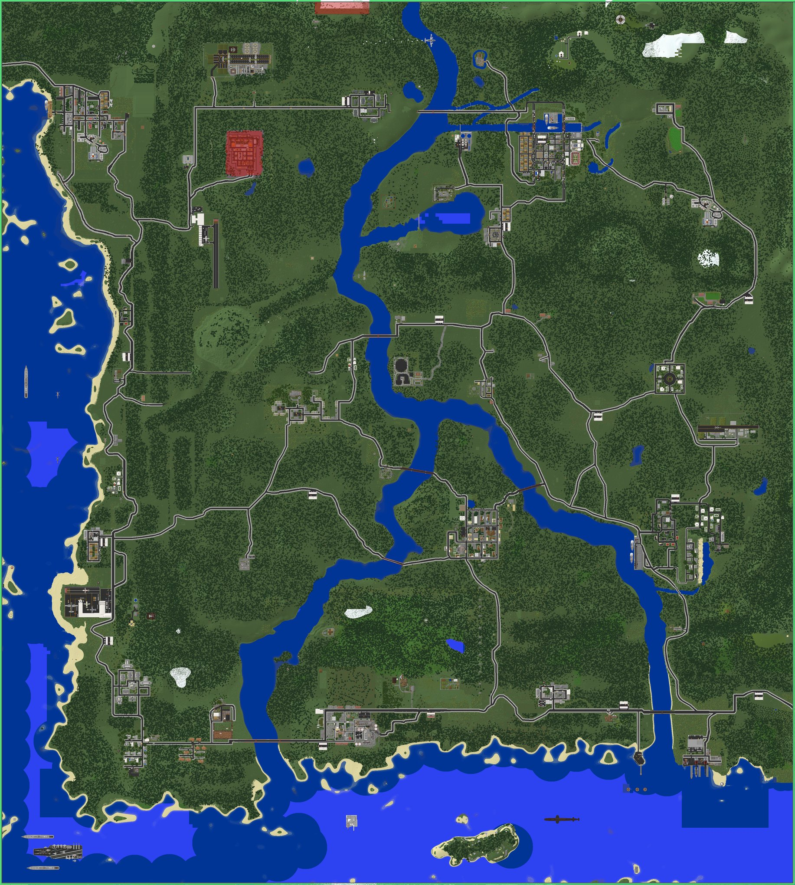
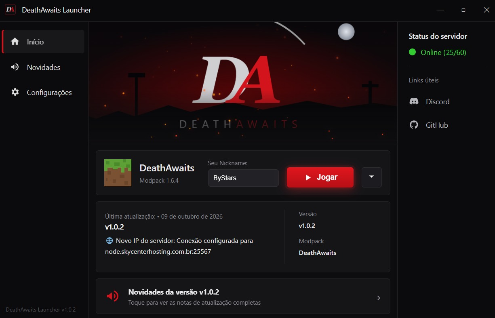

Crafting Dead · Minecraft 1.6.4
Um servidor brasileiro de sobrevivência no apocalipse zumbi. Procure loot nas cidades, monte sua base e dispute o mapa com outros sobreviventes.
Para Windows. Funciona com conta original ou pirata.
Role para ver o mapaO mapa
Cidades construídas bloco a bloco para o DeathAwaits. Escolha um ponto e leia o dossiê antes de sair da safezone.

Pronto pra sair da safezone?
Baixe o launcher, entre no servidor e escolha seu primeiro destino. No Discord você encontra avisos de eventos e suporte.
Para Windows. Funciona com conta original ou pirata.
Como entrar
O launcher instala o Java, o Minecraft e todos os mods sozinho. Você não precisa configurar nada.

-
1
Baixe o launcher
Clique em “Baixar o launcher” e rode o instalador.
-
2
Escolha sua conta
Entre com sua conta Microsoft ou digite um nick para jogar no modo pirata.
-
3
Clique em Jogar
Na primeira vez ele baixa os arquivos do modpack. Depois, só as atualizações.
É normal para programas sem assinatura digital. Clique em Mais informações e depois em Executar assim mesmo.
O que te espera
Sobrevivência com PvP, economia e eventos feitos para o DeathAwaits.
Cidades para saquear
Armas, munição, roupas e suprimentos espalhados pelo mapa.
Zumbis equipados
Zumbis aparecem com roupas, coletes e capacetes, que podem cair quando eles morrem.
Bases
Construa sua base para guardar o loot e se proteger dos zumbis.
Dominação de cidades
Clãs disputam pontos de dominação e ganham recompensas por segurar o local.
Raides
Invada as bases de outros sobreviventes para levar o loot deles, e prepare a sua para aguentar os ataques.
Patentes e clãs
Suba de patente, monte seu clã e acompanhe seu placar de abates.
Zumbis customizados
Além dos zumbis do mod, o servidor tem zumbis próprios, mais perigosos e com comportamentos diferentes.
Airdrops, missões e eventos
Suprimentos caindo do céu, missões com NPCs e eventos organizados pela equipe.
Requisitos
O launcher confere seu PC antes de instalar.